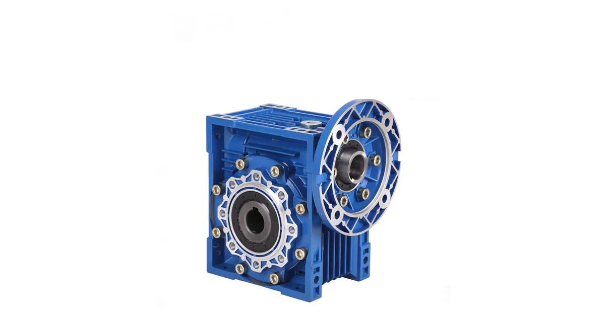
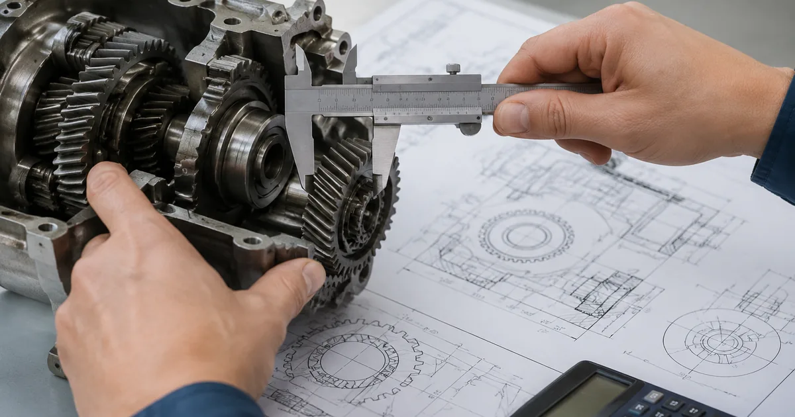

Собственное производствоПромышленные редукторы для производителей оборудования•Отгрузка по всей России•Аналоги SEW, NORD, Bonfiglioli без переделки рамы•Расчёт и КП за 15 минут•Гарантия 36 месяцевПромышленные редукторы для производителей оборудования•Отгрузка по всей России•Аналоги SEW, NORD, Bonfiglioli без переделки рамы•Расчёт и КП за 15 минут•Гарантия 36 месяцев
Опыт инженеров Завода Редукторов · время чтения ~6 минут
Итальянские редукторы Varmec стало долго и дорого возить, а простой из-за ожидания поставки обходится дороже самого привода. При этом Varmec редуктор строится по стандарту IEC, как и российская серия ZR, поэтому заменить его можно по габаритам — без переделки рамы, фланцев и электрики.
Когда нужна замена Varmec
Редукторы Varmec применяют в конвейерах, мешалках, дозаторах, приводах ворот и упаковочных линиях. После разрыва прямых поставок оригинал доступен только через серый импорт — с долгим сроком и без гарантии. Если редуктор выработал ресурс или требует замены, разумнее сразу перейти на аналог по присоединительным размерам, а не ждать поставки.
Как подбирают аналог по размерам
Важен не бренд, а совпадение трёх групп параметров:
тип передачи — червячный (VR/VF), соосный (RD) или коническо-цилиндрический (RO);
межосевое расстояние или типоразмер корпуса;
передаточное число i и обороты выхода n₂;
крутящий момент M₂;
фланец IEC (PAM, B5, B14), монтаж (B3/B5/V1), тип вала.
Совпали тип, момент, передаточное и присоединение — аналог ZR встаёт на штатное место без доработки. Калькулятор подбора находит эквивалент по данным с шильдика за 15 минут.

Типовое исполнение червячного привода
Что учесть при замене червячного Varmec
Червячные Varmec компактны и частично самотормозятся, их КПД 0,7–0,9 и падает с ростом передаточного. При подборе сохраняйте класс КПД и передаточное, иначе выходной момент под нагрузкой изменится. Для приводов с частыми пусками учитывайте сервис-фактор: при ударной нагрузке его берут 1,4–1,8.

Расчёт момента и сервис-фактора перед подбором
Сроки, цена и гарантия
Параметр
Varmec (импорт)
Аналог ZR
Срок поставки
от 8–16 недель
со склада / 2–4 недели
Гарантия
обычно нет
36 месяцев, паспорт
Присоединение
IEC (PAM)
совпадает по габаритам
Мы (Завод Редукторов, ООО «НИИ АТТ», Челябинск) делаем российские аналоги по габаритным и присоединительным размерам. Подробнее о замене — на странице импортозамещения, соответствие серий — в разделе аналогов Varmec, ассортимент — в каталоге червячных редукторов.
Вопросы и ответы
Частые вопросы
Встанет ли аналог на место Varmec без переделки?
Да, при совпадении типа передачи, передаточного числа, момента и присоединительных размеров — фланца IEC (PAM), монтажа, диаметра и вылета вала. Серия ZR повторяет габариты массовых типоразмеров Varmec, поэтому замена идёт без доработки рамы и муфт.
Какие данные нужны для подбора замены Varmec?
Тип передачи, межосевое или типоразмер, передаточное i, обороты и момент на выходе, мощность и полюсность двигателя, фланец PAM и монтаж. Всё это на шильдике; при нечитаемом обозначении подбираем по замерам корпуса и валов.
Сколько ждать аналог вместо Varmec?
Ходовые типоразмеры отгружаются со склада или в течение 2–4 недель против 2–4 месяцев на серый импорт. Точный срок зависит от типоразмера и исполнения и уточняется при подборе.
Сохранится ли КПД при замене Varmec?
Да, если подобрать аналог того же типа передачи. Червячные дают 0,7–0,9, соосные и коническо-цилиндрические — 0,94–0,98. Смена типа передачи изменит момент на выходе, поэтому подбирают эквивалент по типу и передаточному числу.
Есть ли гарантия на аналог Varmec?
Да, на изделие выдаётся паспорт и гарантия 36 месяцев при соблюдении режима эксплуатации и регламента смазки. Это отличает поставку аналога от серого импорта, который обычно идёт без гарантийных обязательств.
Как оформить заказ?
Заявка через сайт, письмо на zr@zavod-red.ru или звонок менеджеру. Для юрлиц — счёт по реквизитам, для частных лиц — оплата картой.
Импортозамещение Varmec — это подбор российского аналога ZR по габаритным и присоединительным размерам. Совпадают тип передачи, момент, передаточное и фланец IEC — редуктор встаёт на место без переделки, со сроком от склада и гарантией 36 месяцев.
Подробнее: характеристики и полезные ссылки
Заменить Varmec можно по трём группам параметров: тип передачи, рабочие числа (M₂, i, n₂) и присоединительная геометрия (фланец PAM, монтаж, вал). Фирменный код не важен — важно совпадение габаритов, которое обеспечивает серия ZR.
Пришлите фото или чертёж старого редуктора — изготовим аналог с теми же присоединительными. Переходной фланец или спецвал — спроектируем под вашу геометрию.
Какие документы получите с редуктором?
Паспорт изделия с характеристиками, декларация ЕАС, сертификат ГОСТ 31592-2012. Гарантия 36 месяцев — при поломке меняем по договору.
Подберём аналог Varmec по шильдику
Пришлите фото маркировки Varmec — определим тип, передаточное и присоединительные размеры и подберём российский аналог с КП за 15 минут.
Рекомендуете наши редукторы коллегам, заказчику или своему отделу снабжения? За каждый состоявшийся заказ по вашей рекомендации выплачиваем 5% от суммы — реферальное вознаграждение переводом на карту. Прозрачный договор, работа со снабженцами и проектными отделами напрямую, отгрузка от производителя (ООО «НИИ АТТ», Челябинск).